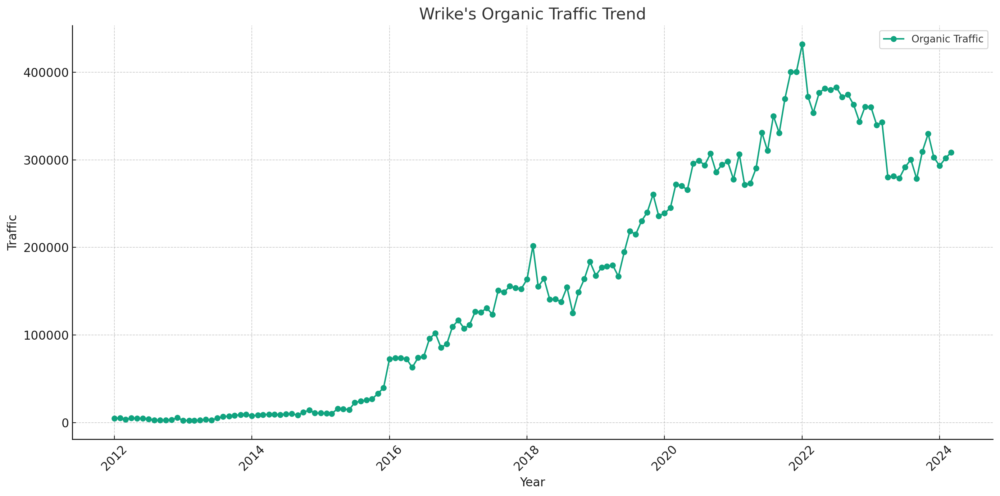

Wrike SEO Strategy Analysis (2024)
Insights into Wrike’s evolving SEO strategy, highlighting key trends, effective keywords, and top-performing URLs from 2012 to 2023.
Takeaways
- SEO Trend: Despite the highest recorded average traffic of 342,720 from 2022-01 to 2023-11, there was a noticeable decreasing trend in traffic.
- SEO Keyword Strategy: In 2018.2, ‘Team Collaboration’ keywords drove 41.09% of total traffic, highlighting a focused thematic approach.
- SEO URL Traffic Distribution: The URL ‘https://www.wrike.com/vag/' received the highest proportion of traffic at 8.63% as of the last analysis period.
Note: The data used in this article is only for the desktop side in the US market. All data are taken from third-party platforms, this site does not guarantee the accuracy of the data.

Analysis of traffic trends for Wrike’s “Organic Traffic” over the specified phases is organized in the table below, showing each phase, the average traffic, and the observed trend:
| Phase. | Average Traffic | Trend |
|---|---|---|
| 2012-01 to 2018-02 | 46,535 | Increasing |
| 2018-02 to 2022-01 | 247,728 | Increasing |
| 2022-01 to 2023-11 | 342,720 | Decreasing |
- Phase 1 (2012-01 to 2018-02): Starting from January 2012 through February 2018, the organic traffic shows a clear upward trend with an average traffic of approximately 46,535.
- Phase 2 (2018-02 to 2022-01): From February 2018 through January 2022, the trend continues to increase, with a significantly higher average traffic of approximately 247,728.
- Phase 3 (2022-01 to 2023-11): From January 2022 through November 2023, despite having the highest average traffic of about 342,720, the trend has turned to decreasing.
Wrike’s SEO Strategy in 2018.2
Organic Keyword Distribution
| Keyword Topic | Keyword Example | Traffic | Traffic (%) |
|---|---|---|---|
| Team Collaboration | team building activities | 82,928 | 41.09% |
| Other | project | 61,700 | 30.57% |
| Brand Name | wrike | 31,027 | 15.37% |
| Management | program manager | 25,052 | 12.41% |
| Software Tools | brainstorming tools | 1,101 | 0.55% |
Classification Rules:
- Brand Name: Keywords directly containing the term “Wrike”.
- Management: Keywords including terms like “manager” or “management”.
- Team Collaboration: Keywords related to team activities or collaboration.
- Software Tools: Keywords referring to specific tools or software solutions.
- Other: Keywords that don’t fit the above categories.
URL Traffic Distribution
The traffic distribution across different URLs shows the focus areas on Wrike’s website. Here’s a breakdown of the top 5 URLs by traffic volume and their contribution to total traffic:
| URL | Traffic | Traffic (%) |
|---|---|---|
| https://www.wrike.com/blog/team-building-games/ | 51,610 | 25.57% |
| https://www.wrike.com/blog/ultimate-guide-team… | 35,731 | 17.71% |
| https://www.wrike.com/ | 25,245 | 12.51% |
| https://www.wrike.com/blog/program-manager-vs-… | 7,455 | 3.69% |
| https://www.wrike.com/project-management-guide… | 4,908 | 2.43% |
Summary of Wrike’s SEO Strategy in 2018.2
- High Focus on Team Collaboration: A significant portion of the traffic (over 41%) is driven by keywords related to team collaboration, indicating a strategic focus on this topic.
- Brand Visibility: Keywords including the brand name “Wrike” contribute significantly to the traffic (over 15%), reflecting efforts to strengthen brand recognition and authority.
- Diverse Content Strategy: The URLs attracting the most traffic feature diverse content including blogs on team-building games and guides, highlighting a content-rich approach to attract and engage users.
- Management and Tools: Topics around management and software tools, although less dominant, still play a role in the SEO strategy, targeting specific professional needs and niches.
Wrike’s SEO Strategy in 2022.1
Organic Keyword Distribution
| Keyword Topic | Keyword Example | Traffic | Traffic (%) |
|---|---|---|---|
| Other | pert | 240,011 | 55.57% |
| Project Management Methodologies | agile methodology | 67,318 | 15.59% |
| Brand Name | wrike | 53,651 | 12.42% |
| Team Collaboration | team building activities | 36,315 | 8.41% |
| Project Management Office | pmo meaning | 28,902 | 6.69% |
| Software Tools | project management tool | 5,677 | 1.31% |
Classification Rules:
- Brand Name: Keywords specifically containing “Wrike”.
- Project Management Methodologies: Keywords related to methodologies like Agile, Waterfall, etc.
- Team Collaboration: Keywords involving team activities or related to collaborative efforts.
- Software Tools: Keywords referring to specific tools or software solutions.
- Project Management Office (PMO): Keywords related specifically to PMO.
- Other: Keywords that do not fit into the above categories but are significant enough to be tracked.
URL Traffic Distribution
The traffic distribution across different URLs reflects the focus areas on Wrike’s website. Here’s the data for the top 5 URLs by traffic volume and their contribution to total traffic:
| URL | Traffic | Traffic (%) |
|---|---|---|
| https://www.wrike.com/blog/ultimate-guide-team… | 33,840 | 7.84% |
| https://www.wrike.com/ | 31,210 | 7.23% |
| https://www.wrike.com/project-management-guide… | 30,684 | 7.10% |
| https://www.wrike.com/blog/what-is-a-pmo-infog… | 15,409 | 3.57% |
| https://www.wrike.com/project-management-guide… | 13,239 | 3.07% |
Summary of Wrike’s SEO Strategy in 2022.1
- Emphasis on Diverse Topics: A significant portion of the traffic (over 55%) comes from keywords classified under “Other,” indicating a broad and varied SEO focus.
- Strong Brand Focus: Keywords including the brand name “Wrike” are also significantly represented, supporting strong brand awareness and authority.
- Strategic Content Allocation: URLs drawing the most traffic are predominantly from blogs and guides, suggesting a strong content strategy aimed at educating and engaging users.
- Niche Focuses: Smaller, focused categories like PMO and specific methodologies suggest targeting of specialized audiences within the project management domain.
Wrike’s SEO Strategy in 2023.11
Organic Keyword Distribution
Here’s a summary table showing the adjusted keyword topics, examples, total traffic, and their percentage of total traffic:
| Keyword Topic | Keyword Example | Traffic | Traffic (%) |
|---|---|---|---|
| Other | s curve | 213,737 | 64.83% |
| Brand Name | wrike | 48,325 | 14.66% |
| Project Management Concepts | pmo meaning | 38,047 | 11.54% |
| Project Management Tools | milestone | 21,356 | 6.48% |
| Performance Metrics | okr | 8,230 | 2.50% |
Classification Rules:
- Brand Name: Keywords that include the brand name “Wrike.”
- Project Management Concepts: Keywords related to specific management methodologies and concepts.
- Project Management Tools: Keywords specifically associated with tools used in project management.
- Performance Metrics: Keywords related to key performance indicators and metrics.
- Other: Keywords that do not fit into the specific categories above but still contribute to significant traffic.
URL Traffic Distribution
| URL | Traffic | Traffic (%) |
|---|---|---|
| https://www.wrike.com/vag/ | 28,444 | 8.63% |
| https://www.wrike.com/blog/what-is-a-pmo-infog… | 15,336 | 4.65% |
| https://www.wrike.com/project-management-guide… | 13,722 | 4.16% |
| https://www.wrike.com/project-management-guide… | 8,428 | 2.56% |
| https://www.wrike.com/blog/kpis-vs-okrs-compar… | 7,961 | 2.41% |
Summary of Wrike’s SEO Strategy in 2023.11
- Diverse Keyword Strategy: A significant portion of the traffic comes from a broad category labeled “Other,” indicating a wide-reaching SEO strategy.
- Brand Recognition: A substantial portion of traffic is driven by brand-related keywords, emphasizing efforts to bolster brand recognition and loyalty.
- Focused Content Strategy: The URLs drawing the most traffic include blogs and guides, highlighting a content-rich approach to attract and engage users.
- Specialized Keyword Focus: The classification adjustment to include more specific project management tools reflects a strategy targeting detailed user needs within the project management space.
Summary
While Wrike maintains a consistent approach in terms of brand focus and content strategy, the increasing technicality and specificity of keywords suggest a move towards capturing more specialized segments of the project management market.
Similarities:
-
Consistent Brand Focus: Across all periods, there’s a strong emphasis on brand-related keywords, particularly “Wrike.” This suggests a sustained effort to strengthen brand recognition and visibility.
- 2018.2: Brand-related keywords drove significant traffic (15.37% of the total).
- 2022.1: Brand-related keywords remained a focus with 12.42% of the total traffic.
- 2023.11: Brand-related keywords contributed 14.66% of the total traffic.
-
Content-Driven Strategy: Wrike consistently used content such as blogs and guides to attract traffic, emphasizing a strategy that leverages educational and informational content to engage users.
- Top URLs in all periods often led to blog posts or guides, indicating the importance of content in their SEO strategy.
-
Keyword Variety: In each period, Wrike targeted a wide variety of keywords, including those related to project management tools, methodologies, and performance metrics, indicating a broad targeting strategy to attract diverse user needs.
Differences:
-
Evolution of Keyword Topics:
- 2018.2: The focus was more on team collaboration and management, with top keywords related to team-building activities.
- 2022.1 and 2023.11: Shift towards more technical and specific project management concepts like Agile, PMO, and performance metrics like OKRs. This shows a progression towards more niche and sophisticated areas of project management.
-
Change in Traffic Distribution Among Keywords:
- 2018.2: Top keyword topics had a more balanced distribution of traffic among different categories.
- 2022.1 and 2023.11: There was a notable increase in the concentration of traffic among fewer keyword topics, especially in the “Other” category, which dominated the traffic by a large margin (over 55% in 2022.1 and nearly 65% in 2023.11).
-
Increased Technical Focus:
- 2022.1 and 2023.11 saw an increased focus on technical and niche keywords within the project management domain, such as “Agile methodology,” “PMO,” and “OKRs.” This is in contrast to the broader and more general terms like “team building activities” that were prominent in 2018.2.
-
Traffic Concentration in URLs:
- 2018.2: A more diverse set of URLs contributed to the traffic.
- 2022.1 and 2023.11: Traffic became more concentrated in top-performing URLs, particularly those linked directly from Wrike’s main site or specific popular blog posts. This could indicate a strategy shift towards deepening content on certain popular pages to maximize traffic retention and conversion.